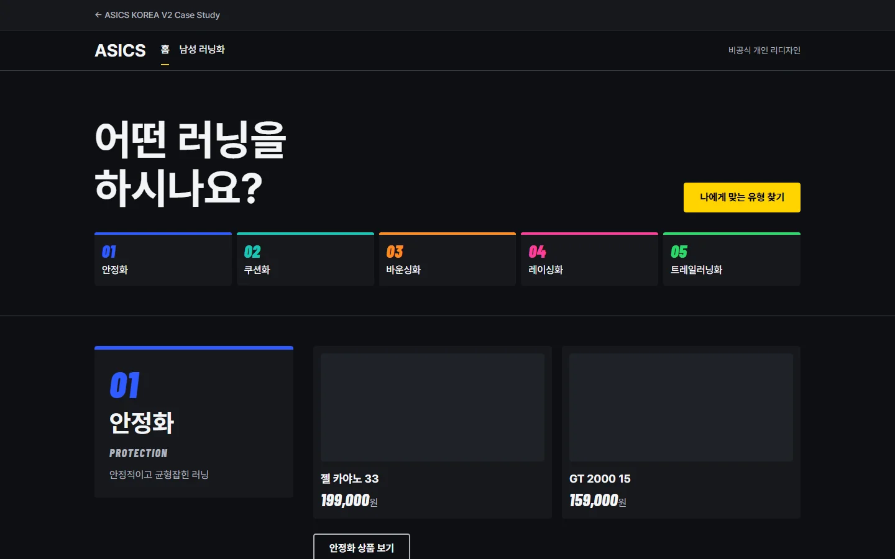
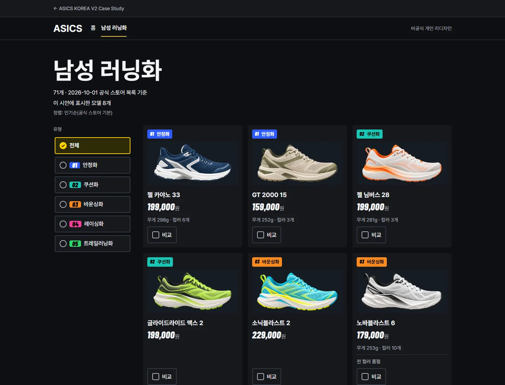
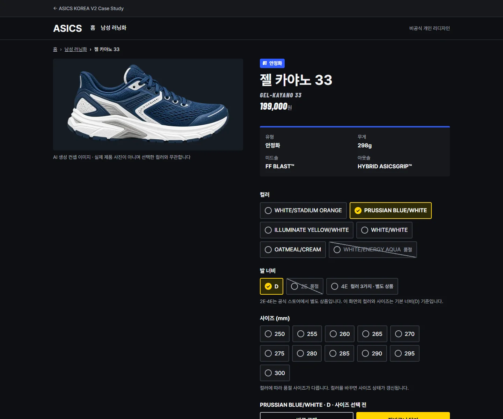
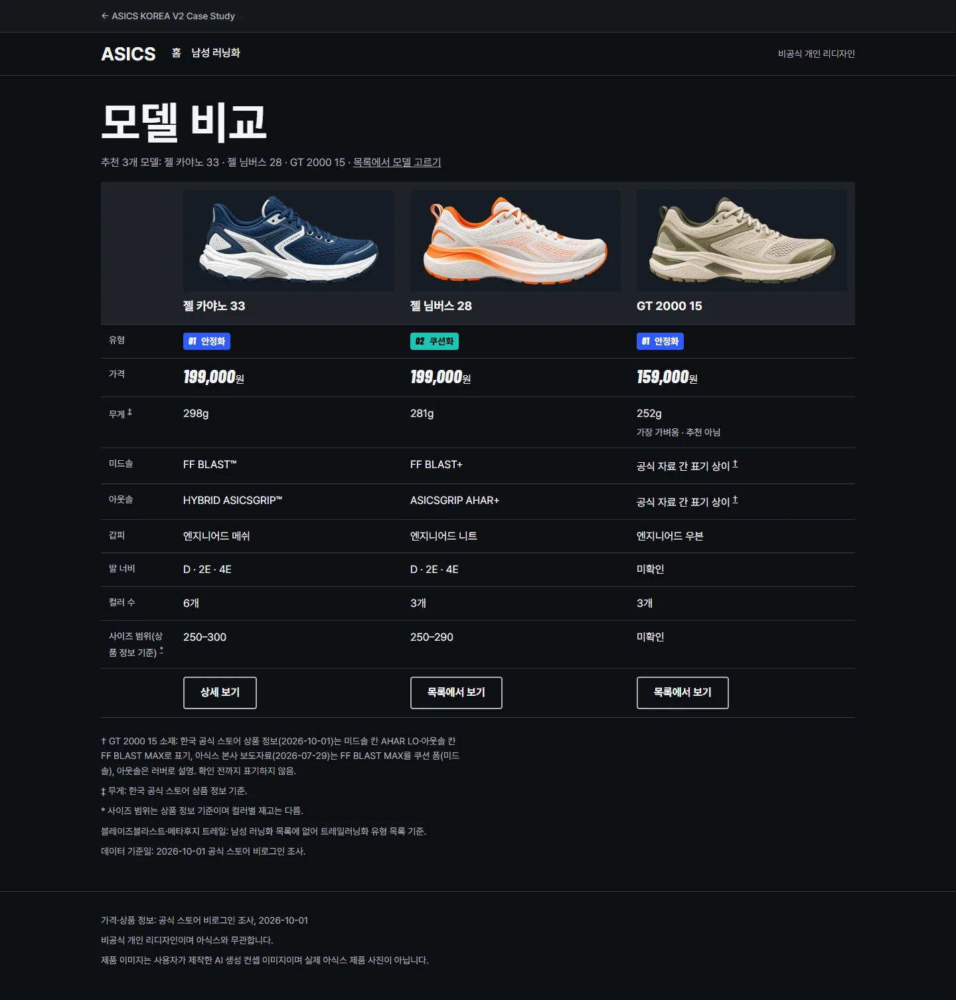
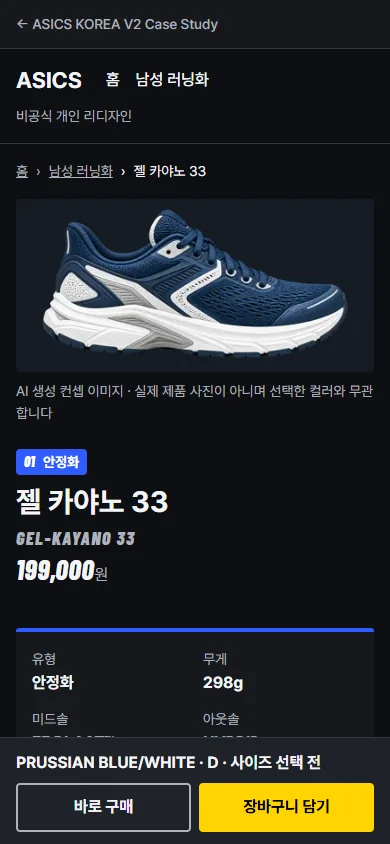

01Overview
PROJECT 03 · ASICS KOREA V2
비공식 개인 리디자인
ASICS KOREA 남성 러닝화 구매 경험 리디자인 — V2
아식스 코리아 공식 스토어의 남성 러닝화 구매 흐름을 V1 Figma 6화면에서 V2 코드 시안 4 Page로 다시 정리한 비공식 개인 리디자인입니다.
비공식 개인 리디자인이며 아식스와 무관합니다. V1·V2 화면의 제품 이미지는 사용자가 만든 AI 생성 컨셉 이미지이며 실제 아식스 제품 사진이 아닙니다.
기간(작업 기록 기준)
- 2026-10-01 ~ 10-03V1 Figma 설계·화면 (기록상 3일)
- 2026-10-12 ~ 10-15V1 Case Study 웹 구현
- 2026-10-18 ~ 10-19V2 코드 시안·검증
- 2026-10-19 ~ 10-20Figma V2 반영
역할 구분
사용자기획·디렉션
- 한국형 재작업·아식스 선정 결정
- 시각 방향 선택(Pace Lanes)
- AI 컨셉 이미지 제작·화면 적용 승인
- AI 워크플로 디렉션 — 지시·검토·최종 승인(본인 기술 기준)
- V2의 코드 우선·데이터 처리 원칙 결정
AI조사·제작·검증
- 리서치·감사, UX 문제 도출·설계안
- 디자인 시스템·화면 구현(V1 Figma, V2 코드, V2 Figma)
- 역할을 나눈 다중 에이전트 협업(조사·설계·구현·독립 QA)
- QA·수정
02Problem
공식 스토어의 유형 분류가 남성 러닝화 목록과 이어지지 않아, 같은 모델을 흩어진 카드 속에서 찾아야 했습니다.
-
필터 7개 중 러닝화 유형 0개
유형 5종은 #RUN의 SHOE FINDER에만 있습니다.
-
젤 카야노 33 하나가 카드 14장으로 흩어져 있습니다.
-
바운싱화 43개 중 32개 품절
품절 카드가 판매 중 카드와 섞입니다.
출처: 2026-10-01 조사(비로그인), 남성 러닝화 목록 71개. 바운싱화 수는 남녀 포함 유형 카테고리 기준입니다.
V1 Case Study에도 문제가 있었습니다. 채색 레인 5개와 큰 색 면 밴드로 정보가 과밀했고, 선택 전용이어야 할 노랑이 목록 카드 전부의 테두리에 쓰였으며, 구매 바 컬러명이 이미지와 어긋났습니다.
03Analysis근거를 다시 세우다
처음 시안은 미국 사이트 데이터로 세운 가설이어서 한국 공식 사이트 조사로 근거를 다시 세웠고, V2에서는 제작 전에 수치를 원본과 대조했습니다.
US 가설 → 한국 근거
사용자가 한국형 재작업을 결정했고, AI가 한국 사이트를 조사해 분류(Goal 2종 → 유형 5종), 가격(달러 → 원), 사이즈(US → mm)를 바꿨습니다. 대표 상품도 한국에서 전 사이즈 품절이던 SUPERBLAST 3 대신 젤 카야노 33으로 정했습니다.
V2 — 확인된 값만
AI가 V1을 감사해 우선순위를 매겼습니다. 확인된 값만 쓰고 충돌값은 임의로 통일하지 않는다는 원칙은 사용자가 정했습니다.
| 대조 결과 | 화면 처리 |
|---|---|
| 상품 수 98(남녀 포함 유형 합)과 71(남성 러닝화 목록)은 범위가 다름 | "71개 · 2026-10-01 공식 스토어 목록 기준"만 표기 |
| 이미지와 컬러명 불일치 3건은 확정 불가 | 이미지와 컬러명을 짝짓지 않음 |
| GT 2000 15 미드솔·아웃솔이 한국 상품 정보와 본사 보도자료에서 다름 | "공식 자료 간 표기 상이" + 각주, 미확인은 "미확인" |
04Strategy유형에서 시작해 한 화면에서 담는다
전략은 셋입니다. 유형에서 출발하고, 모델은 하나로 묶어 최대 3개를 비교하고, 고르는 화면에서 바로 담습니다.
AI가 도출한 설계안입니다.
-
유형 5종을 첫 선택지로
같은 이름과 색을 필터·카드 태그·비교표의 유형 태그로 잇습니다.
-
모델 하나에 카드 한 장
상세 전에 최대 3개를 나란히 봅니다.
-
고르는 화면에서 바로 담기
컬러·발 너비·사이즈를 한 화면에서 정하고 품절도 그 자리에서 보여 줍니다.
시각 방향 — Pace Lanes 유지, 적용 강도 축소
AI가 제안한 후보 중 사용자가 Pace Lanes를 선택했고, B안은 컬러 선택에만 흡수, C안은 기각, 자체 벡터 에셋 전략을 승인했습니다. V2는 이를 버리지 않고 적용 강도를 줄였습니다. 원칙은 주 행동 하나, 유형 색은 유형 정보에만, 번호·수치만 이탤릭 숫자 서체입니다.
사용자 흐름
홈유형 선택
목록필터 · 비교 최대 3
상세옵션 · 구매 바
비교표같은 항목으로 비교
05Design SystemPace Lanes를 얇은 표지로
V2 디자인 시스템은 V1 Pace Lanes 규칙을 유지하되, 색을 넓은 면이 아니라 얇은 표지로 줄였습니다.
- 배경
- 면
- 선
- 텍스트
- 보조 텍스트
- 선택·주 CTA(노랑)
01
안정화
02
쿠션화
03
바운싱화
04
레이싱화
05
트레일러닝화
- 색
- 배경·면·텍스트는 어두운 중립. 유형 5색은 유형 정보에만 쓰고, 색 면 위 글자는 검정, 유형 01 파랑만 흰 글자(V1 규칙 유지). 노랑은 선택 상태와 주 CTA 전용.
- 타입
- 한글은 Pretendard(웹). Figma 파일은 Pretendard가 없는 환경이라 Noto Sans KR로 구성했습니다. Barlow Condensed 이탤릭은 번호·수치에만. 헤더 ASICS는 로고 모방을 피해 본문 서체입니다.
- 간격
- 8단계 스케일과 gutter 하나.
- 선택 상태 1종
- 노랑 테두리·배경에 체크 표시(색만으로 전달하지 않음).
- 품절 옵션 1종
- 흐림 + 사선 + "품절" 글자 + 선택 불가. 안내 옵션은 사선 없이 글자를 선명하게 두어 품절과 구분합니다.
- 버튼 순서
- 보조 왼쪽, 주 오른쪽. Desktop·Mobile 동일(V1은 반대).
- 이미지 칸
- 고정 비율, 잘리거나 늘어나지 않고 위에 글자 없음.
- 유형 태그·칩
- 칩은 얇은 유형 색 띠, 태그는 색 면 위 검정 글자.
- 카드
- 기본 테두리 없음, 비교로 선택했을 때만 노란 윤곽. 상품 품절은 글자 줄.
- 비교 트레이
- 목록에서 최대 3개를 담아 비교 화면으로 이동.
적용 강도 축소: V1은 레인 5개·사양 밴드의 큰 색 면, V2는 선택한 유형 하나의 면 또는 얇은 띠입니다.
06Solution의도 → 결정 → 결과
각 화면을 의도, 결정, 결과 순서로 V1과 비교합니다.
아래 결정은 AI가 설계·구현했고, 사용자는 원칙 결정과 승인으로 관여했습니다. 각 비교는 왼쪽 V1(Figma 화면), 오른쪽 V2(시연 사이트 화면)이며, V2 화면은 시연 사이트에서 직접 열어 볼 수 있습니다.
비공식 개인 리디자인이며 아식스와 무관합니다. V1·V2 화면의 제품 이미지는 사용자가 만든 AI 생성 컨셉 이미지이며 실제 아식스 제품 사진이 아닙니다.
-
홈
- 의도
- 첫 선택을 유형 하나로.
- 결정
- 채색 레인을 얇은 띠로 줄이고 주 CTA를 하나로, 히어로 이미지 없음.
- 결과
- 색은 유형 정보에만, 주 행동은 하나만 남겼습니다.
시연에서 열기V1유형 레인 채색 면 5개 
V2얇은 유형 띠와 주 행동 하나 
-
목록
- 의도
- 필터로 좁히고 모델당 카드 한 장으로 비교 후보 선택.
- 결정
- 노랑은 선택에만, "71개 · 2026-10-01 공식 스토어 목록 기준" 표기, 전 컬러 품절은 글자 줄(시안은 8개 모델만 표시).
- 결과
- 노랑의 뜻이 하나가 됐습니다.
시연에서 열기V1카드 전부 노란 테두리 
V2노랑 = 선택 상태 
-
상세(젤 카야노 33)
- 의도
- 사양이 선택을 가리지 않게.
- 결정
- 사양 밴드를 얇은 띠로, 품절은 선택 자리에서 품절 옵션 1종으로.
- 결과
- 사양은 얇은 띠 아래 한 묶음, 옵션은 바로 그 아래에 배치했습니다.
시연에서 열기V1큰 색 면 사양 밴드 
V2얇은 띠와 품절 옵션 1종 
-
비교
- 의도
- 젤 카야노 33 · 님버스 28 · GT 2000 15를 같은 항목으로.
- 결정
- 가장 가벼운 값에 "추천 아님"을 병기, 확인 못 한 칸은 "미확인", 출처가 다른 값은 각주.
- 결과
- 확정되지 않은 값이 확정처럼 보이지 않습니다.
시연에서 열기V1GT 소재를 원문 그대로 표기 
V2"공식 자료 간 표기 상이" 각주 
-
모바일 상세
- 의도
- 고정 구매 바가 화면과 모순되지 않게.
- 결정
- 이미지는 선택한 컬러와 무관하다고 고지하고 컬러명과 짝짓지 않음(불일치 3건은 해소가 아니라 회피).
- 결과
- 충돌을 해소하지는 못해, 이미지가 컬러와 무관하다는 고지로 오해를 피했습니다.
시연에서 열기 (390px 폭)V1구매 바 WHITE/WHITE · 이미지 네이비 
V2컬러 무관 고지, 고정 구매 바(첫 화면) 
07Outcome확인한 것, 하지 않은 것
코드 시안은 Render와 원본 대조로 확인했지만 사용자 테스트와 실기기 검증은 하지 않아 효과는 증명하지 못했습니다.
전환율·사용성 개선은 말하지 않습니다.
검증
코드 시안 4 Page × 4 폭(1920·1440·768·390) 측정 문제 0
첫 QA에서 비교 390 가로 넘침 524px 발견 → 수정 → 재검증 통과
제품 이미지(AI 생성 컨셉 이미지 10종)를 넣은 시연도 측정 0, 이미지-모델 매칭 일치
Figma V2: 화면 8개를 변수·텍스트 스타일·컴포넌트로 구성(편집 가능 레이어), 웹 캡처와 대조 QA
하지 않은 것
- 사용자·실기기·A/B 테스트
- Safari·Firefox 확인
- 웹 Pretendard ↔ Figma Noto Sans KR 서체 차이 해소
다음 검증
- 유형 분류를 이해하는가
- 비교 항목 우선순위가 맞는가
- 모바일 구매 바가 쓰기 편한가
데이터 기준: 2026-10-01 비로그인 조사 값이며 현재와 다를 수 있습니다.
비공식 개인 리디자인 · 아식스와 무관PROJECT 03 · ASICS KOREA V2